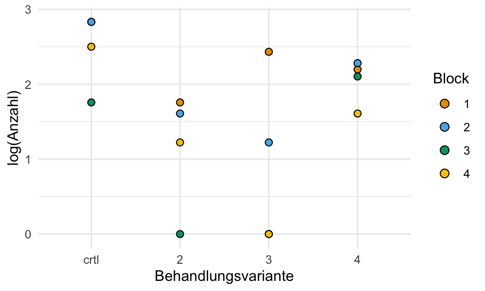

pacman::p_load(tidyverse, magrittr, see, scales,
effectsize, parameters, broom, readxl,
emmeans, conflicted)
conflict_prefer("select", "dplyr")
conflict_prefer("filter", "dplyr")
conflict_prefer("mutate", "dplyr")22 Der Effektschätzer
Version vom August 11, 2023 um 17:37:53
“Alles, was wir hören, ist eine Meinung, keine Tatsache. Alles, was wir sehen, ist eine Perspektive, nicht die Wahrheit.” — Marcus Aurelius, Meditationen
Eine wunderbare Übersicht über den Begriff Effektschätzer liefert das englische Buch Doing Meta-Analysis with R: A Hands-On Guide.
Der Effektschätzer. Ein seltsames Kapitel, denn ich tue mich sehr schwer, dieses Kapitel irgendwo in die Linearität dieses Buches hier einzuordnen. Deshalb ist dieses Kapitel eigentlich immer an der falschen Stelle. Entweder hast du schon die statistischen Tests gelesen und du wüsstest gerne was die Effektschätzer sind oder du suchst hier nochmal die Beschreibung der Effektschätzer zum Beispiel aus der multiple Regression heraus. Also steht jetzt dieses Kapitel hier im Raum und du musst schauen, was du wirklich brauchst. Oder ob du dieses Kapitel erst überspringst und dann später nochmal hier liest.
Der Effektschätzer wird auch gerne Theta \(\boldsymbol{\theta}\) genannt. Da wir dann aber später noch mit anderen Konzepten in die Quere kommen, nutze ich das etwas intuitivere Delta \(\boldsymbol{\Delta}\).
Wenn wir einen der vielen Effektschätzer berechnen wollen, dann nutzen wir dafür die Effektschätzer aus dem R Paket effectsize. Das R Paket effectsize liefert Effektschätzer für fast alle statistischen Gelegenheiten. Wir werden hier wie immer nur den groben Überblick abdecken. Vermutlich wird das Kapitel dann noch Anwachsen. Streng genommen gehört das Kapitel 30 zu den diagnostischen Tests auf einer 2x2 Kreuztabelle auch irgendwie zu Effektschätzern. Wenn du Spezifität und Sensitivität suchst bist du in dem Kapitel zu diagnostischen Tests richtig.
Wir unterscheiden hier erstmal grob in drei Arten von Effektschätzern:
- Effektschätzer, die einen Mittelwertsunterschied beschreiben.
- Effektschätzer, die einen Anteilsunterschied beschreiben.
- Effektschätzer, die einen Wirkungsgrad beschreiben.
Daneben gibt es wie noch die Korrelation wie in Kapitel 35 beschrieben. Die Korrelation wollen wir aber in diesem Kapitel nicht vorgreifen bzw. wiederholen.
Am Ende muss du immer den Effekt im Kontext der Fragestellung bzw. des Outcomes \(y\) bewerten. Der numerische Unterschied von \(0.1\) cm kann in einem Kontext viel sein. Das Wachstum von Bakterienkolonien kann ein Unterschied von \(0.1\) cm viel sein. Oder aber sehr wenig, wenn wir uns das Wachstum von Bambus pro Tag anschauen. Hier bist du gefragt, den Effekt in den Kontext richtig einzuordnen. Ebenso stellt sich die Frage, ob ein Unterschied von 6% viel oder wenig ist.
Effektschätzer
Wenn wir uns einen Unterschied eines Mittelwerts anschauen, dann haben wir keinen Effekt vorliegen, wenn der Mittlwertsunterschied \(\Delta\) zwischen der Gruppe \(A\) und der Gruppe \(B\) gleich 0 ist. Die Nullhypothese gilt. Beide Gruppen \(A\) und \(B\) haben den gleichen Mittelwert.
\[ \Delta_{A-B} = A - B = 0 \]
Wenn wir uns einen Unterschied eines Anteils anschauen, dann haben wir keinen Effekt vorliegen, wenn der Anteilsunterschied \(\Delta\) zwischen der Gruppe \(A\) und der Gruppe \(B\) gleich 1 ist. Die Nullhypothese gilt. Beide Gruppen \(A\) und \(B\) haben den gleichen Anteil.
\[ \Delta_{A/B} = \cfrac{A}{B} = 1 \]
Dieses Wissen brauchen wir um die Signifikanzschwelle bei einem 95% Konfidenzintervall richtig zu setzen und interpretieren zu können. Siehe dazu auch nochmal das Kapitel 20.2.3.
22.1 Genutzte R Pakete
Wir wollen folgende R Pakete in diesem Kapitel nutzen.
Am Ende des Kapitels findest du nochmal den gesamten R Code in einem Rutsch zum selber durchführen oder aber kopieren.
22.2 Unterschied zweier Mittelwerte
Wir berechnen zwei Mittelwerte \(\bar{y}_1\) und \(\bar{y}_2\). Wenn wir wissen wollen wie groß der Effekt zwischen den beiden Mittelwerten ist, dann bilden wir die Differenz. Wir berechnen das \(\Delta_{y_1-y_2}\) für \(y_1\) und \(y_2\) indem wir die beiden Mittelwerte voneinander abziehen.
\[ \Delta_{y_1-y_2} = \bar{y}_1 - \bar{y}_2 \]
Warum schreiben wir hier vermutlich? Ein statistischer Test ist eine Funktion von \(\Delta\), \(s\) und \(n\). Wir können auch mit kleinem \(\Delta\) die Nullhypothese ablehnen, wenn \(s\) und \(n\) eine passende Teststatistik generieren. Siehe dazu auch das Kapitel 20.3.
Wenn es keinen Unterschied zwischen den beiden Mittelwerten \(\bar{y}_1\) und \(\bar{y}_2\) gibt, dann ist die Differenz \(\Delta_{y_1-y_2} = \bar{y}_1 - \bar{y}_2\) gleich 0. Wir sagen, die Nullhypothese vermutlich gilt, wenn die Differenz klein ist. Was wir besser annehmen können ist, dass die Relevanz klein ist. Effekt mit einem geringen Mittelwertsunterschied sind meistens nicht relevant. Aber diese Einschätzung hängt stark von der Fragestellung ab.
\[ H_0: \Delta_{y_1-y_2} = \bar{y}_1 - \bar{y}_2 = 0 \]
In Tabelle 22.1 ist nochmal ein sehr simples Datenbeispiel gegeben an dem wir den Zusammenhang nochmal nachvollziehen wollen.
| animal | jump_length |
|---|---|
| cat | 8.0 |
| cat | 7.9 |
| cat | 8.3 |
| cat | 9.1 |
| dog | 8.0 |
| dog | 7.8 |
| dog | 9.2 |
| dog | 7.7 |
Nehmen wir an, wir berechnen für die Sprungweite [cm] der Hundeflöhe einen Mittelwert von \(\bar{y}_{dog} = 8.2\) und für die Sprungweite [cm] der Katzenflöhe einen Mittelwert von \(\bar{y}_{cat} =8.3\). Wie große ist nun der Effekt? Oder anders gesprochen, welchen Unterschied in der Sprungweite macht es aus ein Hund oder eine Katze zu sein? Was ist also der Effekt von animal? Wir rechnen \(\bar{y}_{dog} - \bar{y}_{cat} = 8.2 - 8.3 = -0.1\). Zum einen wissen wir jetzt “die Richtung”. Da wir ein Minus vor dem Mittelwertsunterschied haben, müssen die Katzenflöhe weiter springen als die Hundeflöhe, nämlich 0.1 cm. Dennoch ist der Effekt sehr klein.
22.2.1 Cohen’s d
Da der Mittlwertsunterschied alleine nnur eine eingeschränkte Aussage über den Effekt erlaubt, gibt es noch Effektschätzer, die den Mittelwertsunterschied \(\Delta_{y_1-y_2}\) mit der Streuung \(s^2\) sowie der Fallzahl zusammenbringt. Der bekannteste Effektschätzer für einen Mittelwertsunterschied bei großer Fallzahl mit mehr als 20 Beobachtungen ist Cohen’s d. Wir können Cohen’s d wie folgt berechnen.
\[ |d| = \cfrac{\bar{y}_1-\bar{y}_2}{\sqrt{\cfrac{s_1^2+s_2^2}{2}}} \]
Wenn wir die berechneten Mittelwerte und die Varianz der beiden Gruppen in die Formel einsetzten ergibt sich ein absolutes Cohen’s d von 0.24 für den Gruppenvergleich.
\[ |d| = \cfrac{8.2 - 8.3}{\sqrt{(0.5^2+0.3^2) /2}} = \cfrac{-0.1}{0.41} = \lvert-0.24\rvert \]
Mehr Informationen zu Cohen’s d gibt es auf der Hilfeseite von effectsize: Interpret standardized differences
Was denn nun Cohen’s d exakt aussagt, kann niemand sagen. Aber wir haben einen Wust an möglichen Grenzen. Hier soll die Grenzen von Cohen (1988) einmal angegeben werden. Cohen (1988) hat in seiner Arbeit folgende Grenzen in Tabelle 22.2 für die Interpretation von \(d\) vorgeschlagen.
| Cohen’s d | Interpretation des Effekts |
|---|---|
| \(d < 0.2\) | Sehr klein |
| \(0.2 \leq d < 0.5\) | Klein |
| \(0.5 \leq d < 0.8\) | Mittel |
| \(d \geq 0.8\) | Stark |
Wir können auch über die Funktion cohens_d() Cohen’s d einfach in R berechnen. Die Funktion cohens_d() akzeptiert die Formelschreibweise. Die 95% Konfidenzintervalle sind mit Vorsicht zu interpretieren. Denn die Nullhypothese ist hier nicht so klar formuliert. Wir lassen also die 95% Konfidenzintervalle erstmal hier so stehen.
cohens_d(jump_length ~ animal, data = data_tbl, pooled_sd = TRUE)Cohen's d | 95% CI
-------------------------
0.24 | [-1.16, 1.62]
- Estimated using pooled SD.Dankenswerterweise gibt es noch die Funktion interpret_cohens_d, die es uns erlaubt auszusuchen nach welche Literturquelle wir den Wert von Cohen’s d interpretieren wollen. Ob dieser Effekt relevant zur Fragestellung ist musst du selber entscheiden.
interpret_cohens_d(0.24, rules = "cohen1988")[1] "small"
(Rules: cohen1988)22.2.2 Hedges’ g
Soweit haben wir uns mit sehr großen Fallzahlen beschäftigt. Cohen’s d ist dafür auch sehr gut geeigent und wenn wir mehr als 20 Beobachtungen haben, können wir Cohen’s d auch gut anwenden. Wenn wir weniger Fallzahl vorliegen haben, dann können wir Hedges’ g nutzen. Hedges’ g bietet eine Verzerrungskorrektur für kleine Stichprobengrößen (\(N < 20\)) sowie die Möglichkeit auch für unbalanzierte Gruppengrößen einen Effektschätzeer zu berechnen. Die Formel sieht mit dem Korrekturterm recht mächtig aus.
\[ g = \cfrac{\bar{y}_1 - \bar{y}_2}{s^*} \cdot \left(\cfrac{N-3}{N-2.25}\right) \cdot \sqrt{\cfrac{N-2}{N}} \]
mit
\[ s^* = \sqrt{\cfrac{(n_1-1)s_1^2 + (n_2-1)s_2^2}{n_1+n_2-2}} \]
Wir können aber einfach die Mittelwerte und die Varianzen aus unserem beispiel einsetzen. Da unsere beiden Gruppen gleich groß sind \(n_1 = n_2\) und damit ein balanziertes Design vorliegt, sind Cohen’s d und Hedges’ g numerisch gleich. Wir können dann noch für die geringe Fallzahl korrigieren und erhalten ein händisches \(g = 0.18\).
\[ g = \cfrac{8.2 - 8.3}{0.41} \cdot \left(\cfrac{8-3}{8-2.25}\right) \cdot \sqrt{\cfrac{8-2}{8}} = \lvert-0.24\rvert \cdot 0.87 \cdot 0.87 \approx 0.18 \]
mit
\[ s^* = \sqrt{\cfrac{(4-1)\cdot0.5^2 + (4-1)\cdot0.3^2}{4+4-2}} = \sqrt{\cfrac{0.75 + 0.27}{6}} = 0.41 \]
In R gibt es die Funktion hedges_g() die uns erlaubt in der Formelschreibweise direkt Hedges’ g zu berechnen. Wir sehen hier eine Abweichung von unserer händischen Rechnung. Das ist aber in soweit nicht ungewöhnlich, da es noch eine Menge Varianten der Anpassung für die geringe Fallzahl gibt. In der Anwendung nutzen wir die Funktion aus dem Paket effectsize wie hier durchgeführt.
Wir ignorieren wie auch bei Cohen’s d das 95% Konfidenzintervall, da die Interpretation ohne die Nullhypothese nicht möglich ist. Die Nullhypothese ist in diesem Fall komplexer. Wir lassen daher das 95% Konfidenzintervall erstmal einfach hier so stehen.
hedges_g(jump_length ~ animal, data = data_tbl, pooled_sd = TRUE)Hedges' g | 95% CI
-------------------------
0.21 | [-1.01, 1.41]
- Estimated using pooled SD.Auch für Hedges’ g gibt es die Möglichkeit sich über die Funktion interpret_hedges_g() den Wert von \(g=0.21\) interpretieren zu lassen. Nach Sawilowsky (2009) haben wir hier einen kleinen Effekt vorliegen. Ob dieser Effekt relevant zur Fragestellung ist musst du selber entscheiden.
interpret_hedges_g(0.21, rules = "sawilowsky2009")[1] "small"
(Rules: sawilowsky2009)Die Hilfeseite zu dem Paket effectsize bietet eine Liste an möglichen Referenzen für die Wahl der Interpretation der Effektstärke. Du musst dann im Zweifel schauen, welche der Quellen und damit Grenzen du nutzen willst.
22.3 Unterschied zweier Anteile
Eine Wahrscheinlichkeit und eine Chance sind nicht das Gleiche. Mehr in diesem Abschnitt.
Neben den Unterschied zweier Mittelwerte ist auch häufig das Interesse an dem Unterschied zwischen zwei Anteilen. Nun unterscheiden wir zwischen Wahrscheinlichkeiten und Chancen. Beide Maßzahlen, die Wahrscheinlichkeit wie auch die Chance, beschreiben einen Anteil. Hier tritt häufig Verwirrung auf, daher hier zuerst ein Beispiel.
Wir behandelt \(n = 65\) Hunde mit dem Antiflohmittel FleaEx. Um die Wirkung von FleaEx auch bestimmen zu können haben wir uns zwei Gruppen von Hunden ausgesucht. Wir haben Hunde, die mit Flöhe infiziert sind und Hunde, die nicht mit Flöhen infiziert sind. Wir schauen nun in wie weit FleaEx gegen Flöhe hilft im Vergleich zu einer Kontrolle.
| Group | |||
| FleaEx | Control | ||
| Infected | Yes (1) | \(18_{\;\Large a}\) | \(23_{\;\Large b}\) |
| No (0) | \(14_{\;\Large c}\) | \(10_{\;\Large d}\) |
Aus der Tabelle 22.3 können wir entnehmen, dass 18 behandelte Hunde mit Flöhen infiziert sind und 14 Hunde keine Infektion aufweisen. Bei den Hunden aus der Kontrolle haben wir 23 infizierte und 10 gesunde Tiere beobachtet.
Es gibt verschiedene Typen von klinischen Studien, also Untersuchungen an Menschen. Einige Studien liefern nur \(OR\) wieder andere Studientypen liefern \(RR\).
Wir können nun zwei Arten von Anteilen berechnen um zu beschreiben, wie sich der Anteil an infizierten Hunden verhält. Das bekanntere ist die Frequenz oder Wahrscheinlichkeit oder Risk Ratio (\(RR\)). Das andere ist das Chancenverhältnis oder Odds Ratio (\(OR\)). Beide kommen in der Statistik vor und sind unterschiedlich zu interpretieren.
Um die die Odds Ratio und die Risk Ratios auch in R berechnen zu können müssen wir einmal die 2x2 Kreuzabelle in R nachbauen. Wir nutzen dafür die Funktion matrix() und müssen schauen, dass die Zahlen in der 2x2 Kreuztabelle in R dann auch so sind, wie in der Datentabelle. Das ist jetzt ein schöner Codeblock, ist aber dafür da um sicherzustellen, dass wir die Zahlen richtig eintragen.
cross_mat <- matrix(c(18, 23, 14, 10),
nrow = 2, byrow = TRUE,
dimnames = list(
Infected = c("Yes", "No"),
Group = c("FleaEx", "Control")
)
)
cross_mat Group
Infected FleaEx Control
Yes 18 23
No 14 10George, Stead, und Ganti (2020) liefert eine gute Übersicht über What’s the risk: differentiating risk ratios, odds ratios, and hazard ratios?
Später werden wir das \(OR\) und \(RR\) wieder treffen. Das \(OR\) kommt in der logistsichen Regression als Effektschätzer vor. Wir nutzen das \(RR\) als Effektschätzer in der Poissonregression.
22.3.1 Wahrscheinlichkeitsverhältnis oder Risk Ratio (RR)
Wir berechnen wir nun das Wahrscheinlichkeitsverhältnis oder Risk Ratio (RR)? Das Risk Ratio ist das Verhältnis von den infizierten Hunden in der Behandlung (\(a\)) zu allen infizierten Hunden (\(a+c\)) zu dem Verhältnis der gesunden Hunde in der Behandlung (\(b\)) zu allen gesunden Hunden (\(b+d\)). Das klingt jetzt etwas wirr, deshlab helfen manchaml wirklich Formeln, den Zusammenhang besser zu verstehen.
\(Pr(\mbox{FleaEx}|\mbox{infected})\) ist die Wahrscheinlichkeit infiziert zu sein, wenn der Hund mit FleaEx behandelt wurde.
\[ Pr(\mbox{FleaEx}|\mbox{infected}) = \cfrac{a}{a+c} = \cfrac{18}{18+14} \approx 0.56 \]
\(Pr(\mbox{Control}|\mbox{infected})\) ist die Wahrscheinlichkeit infiziert zu sein, wenn der Hund mit in der Kontrolle war.
\[ Pr(\mbox{Control}|\mbox{infected}) = \cfrac{b}{b+d} = \cfrac{23}{23 + 10} \approx 0.70 \]
Das Risk Ratio ist mehr oder minder das Verhältnis von der beiden Spalten der Tabelle 22.3 für die Behandlung. Wir erhalten also ein \(RR\) von \(0.76\). Damit mindert die Gabe von FleaEx die Wahrscheinlichkeit sich mit Flöhen zu infizieren.
\[ \Delta_{y_1/y_2} = RR = \cfrac{Pr(\mbox{FleaEx}|\mbox{infected})}{Pr(\mbox{Control}|\mbox{infected})} = \cfrac{0.56}{0.70} \approx 0.80 \]
Wir überprüfen kurz mit der Funktion riskratio() ob wir richtig gerechnet haben. Das 95% Konfidenzintervall können wir interpretieren, dafür brauchen wir aber noch einmal eine Idee was “kein Effekt” bei einem Risk Ratio heist.
riskratio(cross_mat)Risk ratio | 95% CI
-------------------------
0.81 | [0.32, 2.01]Wann liegt nun kein Effekt bei einem Anteil wie dem RR vor? Wenn der Anteil in der einen Gruppe genauso groß ist wie der Anteil der anderen Gruppe.
\[ H_0: RR = \cfrac{Pr(\mbox{dog}|\mbox{infected})}{Pr(\mbox{cat}|\mbox{infected})} = 1 \]
Wir interpretieren das \(RR\) nun wie folgt. Unter der Annahme, dass ein kausaler Effekt zwischen der Behandlung und dem Outcome besteht, können die Werte des relativen Risikos auf folgende Art und Weise interpretiert werden:
- \(RR = 1\) bedeutet, dass die Behandlung keinen Einfluss auf das Outcome hat
- \(RR < 1\) bedeutet, dass das Risiko für das Outcome durch die Behandlung verringert wird, was ein “Schutzfaktor” ist
- \(RR > 1\) bedeutet, dass das Risiko für das Outcome durch die Behandlung erhöht wird, was ein “Risikofaktor” ist.
Das heist in unserem Fall, dass wir mit einem RR von \(0.80\) eine protektive Behandlung vorliegen haben. Die Gabe von FleaEx reduziert das Risiko mit Flöhen infiziert zu werden. Durch das 95% Konfidenzintervall wissen wir auch, dass das \(RR\) nicht signifikant ist, da die 1 im 95% Konfidenzintervall enthalten ist.
22.3.2 Chancenverhältnis oder Odds Ratio (OR)
Neben dem Risk Ratio gibt es noch das Odds Ratio. Das Odds Ratio ist ein Chancenverhältnis. Wenn der Mensch an sich schon Probleme hat für sich Wahrscheinlichkeiten richtig einzuordnen, scheitert man allgemein an der Chance vollkommen. Dennoch ist das Odds Ratio eine gute Maßzahl um abzuschätzen wie die Chancen stehen, einen infizierten Hund vorzufinden, wenn der Hund behandelt wurde.
Scaheun wir uns einmal die Formeln an. Im Gegensatz zum Risk Ratio, welches die Spalten miteinander vergleicht, vergleicht das Odds Ratio die Zeilen. Als erstes berechnen wir die Chance unter der Gabe von FleaEx infiziert zu sein wie folgt.
\[ Odds(\mbox{FleaEx}|\mbox{infected}) = a:b = 18:23 = \cfrac{18}{23} = 0.78 \] Dann berechnen wir die Chance in der Kontrollgruppe infiziert zu sein wie folgt.
\[ Odds(\mbox{Control}|\mbox{infected}) = c:d = 14:10 = \cfrac{14}{10} \approx 1.40 \] Abschließend bilden wir das Chancenverhältnis der Chance unter der Gabe von FleaEx infiziert zu sein zu der Chance in der Kontrollgruppe infiziert zu sein. Es ergbit sich das Odds Ratio wie folgt.
\[ \Delta_{y_1/y_2} = OR = \cfrac{Odds(\mbox{Flea}|\mbox{infected})}{Odds(\mbox{Control}|\mbox{infected})} = \cfrac{a \cdot d}{b \cdot c} = \cfrac{0.78}{1.40} \approx 0.56 \]
Wir überprüfen kurz mit der Funktion oddsratio() ob wir richtig gerechnet haben. Das 95% Konfidenzintervall können wir interpretieren, dafür brauchen wir aber noch einmal eine Idee was “kein Effekt” bei einem Odds Ratio heist.
oddsratio(cross_mat)Odds ratio | 95% CI
-------------------------
0.56 | [0.20, 1.55]Wann liegt nun kein Effekt bei einem Anteil wie dem OR vor? Wenn der Anteil in der einen Gruppe genauso groß ist wie der Anteil der anderen Gruppe.
\[ H_0: OR = \cfrac{Odds(\mbox{dog}|\mbox{infected})}{Odds(\mbox{cat}|\mbox{infected})} = 1 \]
Wir interpretieren das \(OR\) nun wie folgt. Unter der Annahme, dass ein kausaler Effekt zwischen der Behandlung und dem Outcome besteht, können die Werte des Odds Ratio auf folgende Art und Weise interpretiert werden:
- \(OR = 1\) bedeutet, dass die Behandlung keinen Einfluss auf das Outcome hat
- \(OR < 1\) bedeutet, dass sich die Chance das Outcome zu bekommen durch die Behandlung verringert wird, was ein “Schutzfaktor” ist
- \(OR > 1\) bedeutet, dass sich die Chance das Outcome zu bekommen durch die Behandlung erhöht wird, was ein “Risikofaktor” ist.
Das heist in unserem Fall, dass wir mit einem OR von \(0.56\) eine protektive Behandlung vorliegen haben. Die Gabe von FleaEx reduziert die Chance mit Flöhen infiziert zu werden. Durch das 95% Konfidenzintervall wissen wir auch, dass das \(OR\) nicht signifikant ist, da die 1 im 95% Konfidenzintervall enthalten ist.
22.3.3 Odds Ratio (OR) zu Risk Ratio (RR)
Grant (2014) gibt nochmal eine wissenschaftliche Diskussion des Themas zur Konvertierung von OR zu RR.
Wenn wir das OR berechnet haben, wollen wir eventuell das \(OR\) in dem Sinne eines Riskoverhältnisses berichten. Leider ist es nun so, dass wir das nicht einfach mit einem \(OR\) machen können. Ein \(OR\) von 3.5 ist ein großes Chancenverhältnis. Aber ist es auch 3.5-mal so wahrscheinlich? Nein so einfach können wir das OR nicht interpretieren. Wir können aber das \(OR\) in das \(RR\) umrechnen. Dafür brauchen wir aber das \(p_0\). Dabei ist das \(p_0\) das Basisrisiko also die Wahrscheinlichkeit des Ereignisses ohne die Intervention. Wenn wir nichts tun würden, wie wahrscheinlich wäre dann das Auftreten des Ereignisses? Es ergibt sich dann die folgende Formel für die Umrechnung des \(OR\) in das \(RR\).
\[ RR = \cfrac{OR}{(1 - p_0 + (p_0 \cdot OR))} \]
Schauen wir uns das einmal in einem Beispiel an. Wir nutzen für die Umrechnung die Funktion oddsratio_to_riskratio() aus dem R Paket effectsize. Wenn wir ein \(OR\) von 3.5 haben, so hängt das \(RR\) von dem Basisriskio ab. Wenn das Basisirisko für die Erkrankung ohne die Behandlung sehr hoch ist mit \(p_0 = 0.85\), dann ist das \(RR\) sehr klein.
OR <- 3.5
baserate <- 0.85
oddsratio_to_riskratio(OR, baserate) %>% round(2)[1] 1.12Auf der anderen Seite nähert sich das \(OR\) dem \(RR\) an, wenn das Basisriskio für die Erkrankung mit \(p_0 = 0.04\) sehr klein ist.
OR <- 3.5
baserate <- 0.04
oddsratio_to_riskratio(OR, baserate) %>% round(2)[1] 3.18Weil wir natürlich das Basisrisiko nur abschätzen können, verbleibt hier eine gewisse Unsicherheit, wie das \(RR\) zu einem gegebenen \(OR\) aussieht.
22.4 Wirkungsgrad von Pflanzenschutzmitteln
Neben den klassischen Effektmaßzahlen, die sich aus einem Mittelwert oder einem Anteil direkt berechnen, gibt es noch andere Effektmaße. Einer dieser Effektmaße ist der Wirkungsgrad für zum Beispiel ein Pflanzenschutzmittel. Wir können hier aber auch weiter denken und uns überlegen in wie weit wir eine Population von Schaderregern durch eine Behandlung reduzieren können. Unabdingbar ist in diesem Fall eine positive Kontrolle in der nichts gemacht wird sondern nur der normale Befall gemessen wird. Wir berechnen hier den Wirkungsgrad nach Abbott u. a. (1925) mit der Anpassung von Finner, Kunert, und Sonnemann (1989). Der Wirkungsgrad \(WG\) eines Schutzmittels im Vergleich zur Kontrolle berechnet sich wie folgt.
\[ WG = \left(\cfrac{X_n - Y_n}{X_n}\right) \]
mit
- \(Y_n\) Anzahl lebend in der Behandlung
- \(X_n\) Anzahl lebend in der Kontrolle
Natürlich ist die Formel wieder sehr abstrakt, deshalb haben wir zwei Beispieldaten. Zuerst schauen wir uns einen Datensatz zu dem Befall mit Trespe an. Wir haben also Parzellen in denen sich die Trespe ausbreitet und haben verschiedene Behandlungen durchgeführt. Wichtig hierbei, wir haben auch Parzellen wo wir nichts gemacht haben, das ist dann unsere positive Kontrolle (ctrl). Da unsere Daten nicht im Long-Format vorliegen müssen wir die Daten erst noch anpassen und dann die Spalte block in einen Faktor umwandeln.
| variante | block_1 | block_2 | block_3 | block_4 |
|---|---|---|---|---|
| crtl | 16.0 | 16.0 | 4.8 | 11.2 |
| 2 | 4.8 | 4.0 | 0.0 | 2.4 |
| 3 | 10.4 | 2.4 | 0.0 | 0.0 |
| 4 | 8.0 | 8.8 | 7.2 | 4.0 |
Laden wir einmal den Datensatz in R und verwandeln das Wide-Format in das Long-Format. Dann natürlich wie immer alle Faktoren als Faktoren mutieren.
trespe_tbl <- read_excel("data/raubmilben_data.xlsx", sheet = "trespe") %>%
pivot_longer(block_1:block_4,
names_to = "block",
values_to = "count") %>%
mutate(block = factor(block, labels = 1:4),
variante = as_factor(variante))In der Abbildung 22.1 sehen wir nochmal die orginalen, untransformierten Daten sowie die \(log\)-transformierten Daten. Wir nutzen die Funkrion log1p() um die Anzahl künstlich um 1 zu erhöhen, damit wir Nullen in den Zähldaten zum Logarithmieren vermeiden.
ggplot(trespe_tbl, aes(variante, count, fill = block)) +
theme_bw() +
geom_dotplot(binaxis = "y", stackdir = "center") +
labs(x = "Behandlungsvariante", y = "Anzahl", fill = "Block") +
scale_fill_okabeito()
ggplot(trespe_tbl, aes(variante, log1p(count), fill = block)) +
theme_bw() +
geom_dotplot(binaxis = "y", stackdir = "center") +
labs(x = "Behandlungsvariante", y = "log(Anzahl)", fill = "Block") +
scale_fill_okabeito()

Nun geht es eigentlich ganz fix den Wirkungsgrad nach Abbott zu berechnen. Erstmal schätzen wir eine Poissonregression mit der Anzahl der Trespen als Outcome. Es ist wichtig in der Funktion glm() die Option family = poisson zu setzen. Sonst rechnen wir auch keine Poissonregression.
fit <- glm(count ~ variante + block, data = trespe_tbl, family = poisson)Wir nutzen die Schätzer aus dem Modell um mit der Funktion emmeans() die Raten in jeder Variante gemittelt über alle Blöcke zu berechnen. Dann müssen wir nur noch die Formel nach Abbott nutzen um jede Rate in das Verhältnis zur Rate der Kontrolle rate[1] zu setzen. Wir erhalten dann den Wirkungsgrad nach Abbott für unsere drei Varianten.
res_trespe_tbl <- fit %>%
emmeans(~variante, type = "response") %>%
tidy() %>%
mutate(WG_abbott = (rate[1] - rate)/rate[1],
WG_abbott_per = percent(WG_abbott)) %>%
select(variante, rate, WG_abbott, WG_abbott_per)
res_trespe_tbl# A tibble: 4 × 4
variante rate WG_abbott WG_abbott_per
<chr> <dbl> <dbl> <chr>
1 crtl 10.8 0 0.0%
2 2 2.52 0.767 76.7%
3 3 2.89 0.733 73.3%
4 4 6.31 0.417 41.7% Damit haben wir den Wirkungsgard \(WG_{abbott}\) für unser Trepsenbeispiel einmal berechnet. Die Interpretation ist dann eigentlich sehr intuitiv. Wir haben zum Beispiel bei Variante 2 einen Wirkungsgard von 76.7% der Kontrolle und somit auch nur 76.7% der Trepsen auf unseren Parzellen im Vergleich zur Kontrolle.
Wir können auch einfach testen, ob sich die Kontrolle von den anderen Varianten sich unterscheidet. Wir nutzen dafür wieder die Funktion emmeans() und vergleichen alle Varianten zu der Kontrolle. Da die Kontrolle in der ersten Zeile steht bzw. das erste Level des Faktors variante ist, müssen wir noch die Referenz mit ref = 1 setzen.
fit %>%
emmeans(trt.vs.ctrlk ~ variante, type = "response", ref = 1) %>%
pluck("contrasts") contrast ratio SE df null z.ratio p.value
2 / crtl 0.233 0.0774 Inf 1 -4.385 <.0001
3 / crtl 0.267 0.0839 Inf 1 -4.202 0.0001
4 / crtl 0.583 0.1387 Inf 1 -2.267 0.0633
Results are averaged over the levels of: block
P value adjustment: dunnettx method for 3 tests
Tests are performed on the log scale Wir wir sehen, sind alle Varianten, bis auf die Variante 4, signifikant unterschiedlich zu der Kontrolle. Nun könnten wir uns auch Fragen in wie weit sich die Wirkungsgrade untereinander unterscheiden. Dafür müssen wir dann die Anteile mit der Funktion pairwise.prop.test() paarweise Vergleichen. Da wir natürlich auf die Kontrolle standardisieren hat der Vergleich mit der Kontrolle nur so halbwegs Sinn, mag aber von Interesse sein.
pairwise.prop.test(x = res_trespe_tbl$WG_abbott * 100,
n = c(100, 100, 100, 100),
p.adjust.method = "none")
Pairwise comparisons using Pairwise comparison of proportions
data: res_trespe_tbl$WG_abbott * 100 out of c(100, 100, 100, 100)
1 2 3
2 < 2e-16 - -
3 < 2e-16 0.7 -
4 1.4e-12 1.0e-06 1.2e-05
P value adjustment method: none Wir sehen, dass sich alle Varianten in ihrem Wirkungsgrad von der Kontrolle unterscheiden, die Kontrolle hat hier die ID 1. Die Variante 4 unterscheidet sich von allen anderen Varianten in ihrem Wirkungsgrad.
Im zweiten Beispiel wollen wir uns mit dem geometrischen Mittel \(WG_{geometric}\) als Schätzer für den Wirkungsgrad beschäftigen. Hier kochen wir dann einmal die Veröffentlichung von Finner, Kunert, und Sonnemann (1989) nach. Dafür brauchen wir einmal die Daten zu den Raubmilben, die ich schon als Exceldatei aufbereitet habe. Wie immer sind die Rohdaten im Wide-Format, wir müssen aber im Long-Format rechnen. Da bauen wir uns also einmal schnell die Daten um. Dann wollen wir noch die Anzahlen der Raubmilben logarithmieren, so dass wir jede Anzahl um 1 erhöhen um logarithmierte Nullen zu vermeiden. Das ganze machen wir dann in einem Rutsch mit der Funktion log1p().
| sorte | block_1 | block_2 | block_3 | block_4 | block_5 |
|---|---|---|---|---|---|
| 1 | 0 | 2 | 2 | 21 | 0 |
| 2 | 302 | 108 | 64 | 23 | 49 |
| 3 | 59 | 51 | 59 | 1 | 26 |
| 4 | 64 | 154 | 41 | 27 | 41 |
| 5 | 45 | 141 | 51 | 70 | 37 |
| 6 | 58 | 240 | 140 | 27 | 11 |
| 7 | 1 | 2 | 3 | 8 | 16 |
| 8 | 4 | 1 | 0 | 0 | 1 |
| ctrl | 46 | 32 | 62 | 90 | 20 |
Schauen wir uns einmal die Daten in der Abbildung 22.2 an.
ggplot(mite_tbl, aes(sorte, count, fill = block)) +
theme_bw() +
geom_dotplot(binaxis = "y", stackdir = "center") +
labs(x = "Sorten", y = "Anzahl", fill = "Block") +
scale_fill_okabeito()
ggplot(mite_tbl, aes(sorte, log1p(count), fill = block)) +
theme_bw() +
geom_dotplot(binaxis = "y", stackdir = "center") +
labs(x = "Sorten", y = "log(Anzahl)", fill = "Block") +
scale_fill_okabeito()

Wir brauchen jetzt eine Helferfunktion, die uns aus \(Pr\) die Gegenwahrscheinlichkeit \(1 - Pr\) berechnet. Auch wollen wir dann die Prozentangabe der Gegenwahrscheinlichkeit, also die Gegenwahrscheinlichkeit \(1 - Pr\) multipliziert mit Einhundert. Dann brauchen wir als Variable noch die Gruppengröße \(n_g\), die bei uns ja bei 5 liegt. Wir haben pro Sorte fünf Beobachtungen je Block.
get_q <- function(x){100 * (1 - x)}
n_group <- 5Wir nutezn jetzt das geometrisches Mittel um den Effekt der Behandlung bzw. Sorte im Verhältnis zur Kontrolle zu berechnen. Hierbei ist es wichtig sich zu erinnern, dass wir nicht alle paarweisen Vergleiche rechnen, sondern nur jede Sorte \(j\) zu der Kontrolle \(ctrl\) vergleichen. Dabei nutzen wir dann das Verhältnis der geometrisches Mittel um zu Beschreiben um wie viel weniger Befall mit Raubmilden wir in den Sorten \(y_j\) im Verhältnis zur Kontrolle \(y_{ctrl}\) vorliegen haben.
\[ \Delta_{geometric} = \left(\cfrac{\prod_{i=1}^n y_j}{\prod_{i=1}^n y_{ctrl}}\right)^{1/n_j} \mbox{ für Sorte } j \]
Berechnen wir also als erstes einmal das Produkt aller gezählten Raubmilden pro Sorte und speichern das Ergebnis in der Spalte prod.
mite_wg_gemetric_tbl <- mite_tbl %>%
mutate(count = count + 1) %>%
group_by(sorte) %>%
summarise(prod = prod(count))
mite_wg_gemetric_tbl# A tibble: 9 × 2
sorte prod
<fct> <dbl>
1 1 198
2 2 2576106000
3 3 10108800
4 4 497624400
5 5 916413472
6 6 673639344
7 7 3672
8 8 20
9 ctrl 186729543Jetzt können wir im nächsten Schritt einmal das \(\Delta_{geometric}\) berechnen und dann den Wirkungsgrad über die Gegenwahrscheinlichkeit. Wichtig ist hier, dass die Kontrolle in der neunten Zeile ist. Daher teilen wir immer durch das Produkt an neunter Position mit prod[9]. Wir sehen ganz klar, das wir ein Delta von 1 für die Kontrolle erhalten, da wir ja die Kontrolle ins Verhältnis zur Kontrolle setzen. Damit sollte der Rest auch geklappt haben. Den Wirkungsgrad der Sorten in Prozent gegen Raubmilbenbefall im Verhältnis zur Kontrolle können wir dann direkt ablesen. Die Funktion percent() berechnet uns aus den Gegenwahrscheinlichkeiten dann gleich die Prozent. Wir brauchen daher hier noch nicht unsere Funktion get_q().
mite_wg_gemetric_tbl %>%
mutate(delta_geometric = (prod/prod[9])^(1/n_group),
WG_geometric = percent(1 - delta_geometric))# A tibble: 9 × 4
sorte prod delta_geometric WG_geometric
<fct> <dbl> <dbl> <chr>
1 1 198 0.0638 93.6%
2 2 2576106000 1.69 -69.0%
3 3 10108800 0.558 44.2%
4 4 497624400 1.22 -21.7%
5 5 916413472 1.37 -37.5%
6 6 673639344 1.29 -29.3%
7 7 3672 0.114 88.6%
8 8 20 0.0404 96.0%
9 ctrl 186729543 1 0.0% Soweit haben wir erstmal nur eine andere Variante des Wirkungsgrades berechnet. Im Gegensatz zu der Berechnung nach Abbott u. a. (1925) können wir aber bei den geometrischen Wirkungsgrad auch ein einseitiges 95% Konfidenzintervall \([-\infty; upper]\) angeben. Dafür müssen wir erstmal den Exponenten \(a\) berechnen und mit diesem dann die obere Konfidenzschranke \(upper\). Dafür brauchen wir dann doch ein paar statistische Maßzahlen.
\[ \begin{align} a &= \sqrt{2/n} \cdot s \cdot t_{\alpha=5\%} + \ln(1 - \Delta_{geometric})\\ upper &= 1 - e^a \end{align} \]
Wir brauchen zum einen die Freiheitsgrade der Residuen df.residual sowie den Standardfehler der Residuen sigma oder \(s\). Beides erhalten wir aus einem linearen Modell auf den logarithmierten Anzahlen der Raubmilben.
residual_tbl <- lm(log_count ~ sorte + block, data = mite_tbl) %>%
glance() %>%
select(df.residual, sigma)
residual_tbl# A tibble: 1 × 2
df.residual sigma
<int> <dbl>
1 32 0.962Mit den Freiheitsgraden der Residuen können wir jetzt den kritischen Wert \(t_{\alpha = 5\%}\) aus der \(t\)-Verteilung berechnen.
t_quantile <- qt(p = 0.05, df = residual_tbl$df.residual, lower.tail = FALSE)
t_quantile[1] 1.693889Wir können jetzt unseren Datensatz mite_wg_gemetric_tbl um die Spalte mit den Werten des Exponenten \(a\) ergänzen und aus diesem dann die obere Schranke des einseitigen 95% Konfidenzintervall berechnen. Die Werte für die Kontrolle ergeben keinen biologischen Sinn und sind ein mathematisches Artefakt. Wir kriegen halt immer irgendwelche Zahlen raus.
mite_res_tbl <- mite_wg_gemetric_tbl %>%
mutate(delta_geometric = (prod/prod[9])^(1/n_group),
WG_geometric = get_q(delta_geometric),
a = sqrt(2/n_group) * residual_tbl$sigma * t_quantile + log(delta_geometric),
upper = get_q(exp(a)))
mite_res_tbl# A tibble: 9 × 6
sorte prod delta_geometric WG_geometric a upper
<fct> <dbl> <dbl> <dbl> <dbl> <dbl>
1 1 198 0.0638 93.6 -1.72 82.1
2 2 2576106000 1.69 -69.0 1.56 -374.
3 3 10108800 0.558 44.2 0.447 -56.4
4 4 497624400 1.22 -21.7 1.23 -241.
5 5 916413472 1.37 -37.5 1.35 -285.
6 6 673639344 1.29 -29.3 1.29 -262.
7 7 3672 0.114 88.6 -1.14 67.9
8 8 20 0.0404 96.0 -2.18 88.7
9 ctrl 186729543 1 0 1.03 -180. Wir räumen nochmal die Ausgabe auf und konzentrieren uns auf die Spalten und runden einmal die Ergebnisse.
mite_res_tbl %>%
select(sorte, WG_geometric, upper) %>%
mutate(across(where(is.numeric), ~round(.x, 2))) # A tibble: 9 × 3
sorte WG_geometric upper
<fct> <dbl> <dbl>
1 1 93.6 82.1
2 2 -69.0 -374.
3 3 44.2 -56.4
4 4 -21.7 -241.
5 5 -37.5 -285.
6 6 -29.2 -262.
7 7 88.6 67.9
8 8 96.0 88.7
9 ctrl 0 -180. Wir können wir jetzt das einseitige 95% Konfidenzintervall interpretieren? In der Sorte 1 erhalten wir einen Wirkungsgrad von 93.6% und mit 95% Sicherheit mindestens einen Wirkungsgrad von 82.1%. Damit haben wir auch eine untere Schranke für unseren Wirkungsgradschätzer. Wir berichten für die Sorte 1 einen Wirkungsgrad von 93.6% [\(-\infty\); 82.1%].
Genauso können wir aber auch den Wirkungsgrad nach Abbott u. a. (1925) nochmal auf den Daten berechnen. Dafür müssen wir nur eine Poissonregression auf der Anzahl der Raubmilben rechnen. Die angepassten Werte können wir dann verwenden um den \(WG_{abbott}\) zu schätzen.
fit <- glm(count ~ sorte + block, data = mite_tbl, family = poisson)Wir nutzen hier dann die Funktion emmeans() um die mittlere Anzahl an Raubmilben über alle Blöcke zu ermitteln. Dann können wir auch schon den \(WG_{abbott}\) berechnen. Wichtig ist hier, dass die Referenzkategorie mit der Kontrolle an der neunten Stelle bzw. Zeile steht. Deshalb müssen wir auch hier durch prod[9] teilen. Achtung, die \(p\)-Werte haben hier keine tiefere Bedeutung im Bezug auf den Wirkungsgrad und deshalb schauen wir uns diese Werte auch gar nicht tiefer an.
res_mite_tbl <- fit %>%
emmeans(~sorte, type = "response") %>%
tidy() %>%
mutate(WG_abbott = (rate[9] - rate)/rate[9],
WG_abbott_per = percent(WG_abbott)) %>%
select(sorte, WG_abbott, WG_abbott_per, rate)
res_mite_tbl# A tibble: 9 × 4
sorte WG_abbott WG_abbott_per rate
<chr> <dbl> <chr> <dbl>
1 1 0.900 90.0% 4.49
2 2 -1.18 -118.4% 98.0
3 3 0.216 21.6% 35.2
4 4 -0.308 -30.8% 58.7
5 5 -0.376 -37.6% 61.7
6 6 -0.904 -90.4% 85.4
7 7 0.880 88.0% 5.38
8 8 0.976 97.6% 1.08
9 ctrl 0 0.0% 44.9 Wenn du verwirrt bist über die negativen Wirkungsgrade, dann musst du dir klar werden, dass wir immer den Wirkungsgrad im Verhältnis zur Kontrolle berechnen. Wenn du also negative Wirkungsgrade siehst, dann sind die Anzahlen in den Sorten höher als in der Kontrolle. Je nach Fragestellung macht dieses Ergebnis mehr oder weniger Sinn.
Auch hier können wir noch schnell einen statistischen Test rechnen und die Sorten zu der Kontrolle ref = 9 vergleichen.
fit %>%
emmeans(trt.vs.ctrlk ~ sorte, type = "response", ref = 9) %>%
pluck("contrasts") contrast ratio SE df null z.ratio p.value
1 / ctrl 0.100 0.02098 Inf 1 -10.977 <.0001
2 / ctrl 2.184 0.16678 Inf 1 10.229 <.0001
3 / ctrl 0.784 0.07480 Inf 1 -2.551 0.0686
4 / ctrl 1.308 0.10989 Inf 1 3.196 0.0101
5 / ctrl 1.376 0.11436 Inf 1 3.841 0.0009
6 / ctrl 1.904 0.14872 Inf 1 8.244 <.0001
7 / ctrl 0.120 0.02319 Inf 1 -10.973 <.0001
8 / ctrl 0.024 0.00991 Inf 1 -9.028 <.0001
Results are averaged over the levels of: block
P value adjustment: dunnettx method for 8 tests
Tests are performed on the log scale Wir wir sehen, sind alle Varianten signifikant unterschiedlich zu der Kontrolle bis auf die Sorte 3.
Auch hier können wir die Wirkungsgrade miteinander vergleichen. Aber Achtung, wir können nur Wirkungsgrade zwischen 0 und 1 miteinander sinnvoll vergleichen. Deshalb fliegen bei uns einige an Sorten raus. Darüber hinaus musst du jetzt auch einmal schauen, welche Sorte sich hinter der numerischen ID aus dem pairwise.prop.test() verbirgt.
res_mite_tbl %>%
filter(WG_abbott < 1 & WG_abbott >= 0) %$%
pairwise.prop.test(x = WG_abbott * 100,
n = rep(100, 5),
p.adjust.method = "none")
Pairwise comparisons using Pairwise comparison of proportions
data: WG_abbott * 100 out of rep(100, 5)
1 2 3 4
2 < 2e-16 - - -
3 0.821 < 2e-16 - -
4 0.053 < 2e-16 0.019 -
5 < 2e-16 2.7e-06 < 2e-16 < 2e-16
P value adjustment method: none Das letzte Beispiel zeigt nochmal schön, dass wir uns immer überlegen müssen, was wir mit den Wirkungsgraden eigentlich zeigen wollen und welche Wirkungsgrade noch eine biologisch sinnvolle Bedeutung haben.
Referenzen
Abbott, Walter S u. a. 1925. „A method of computing the effectiveness of an insecticide“. J. econ. Entomol 18 (2): 265–67.
Finner, H, J Kunert, und E Sonnemann. 1989. „Über die Berechnung des Wirkungsgrades von Pflanzenschutzmitteln“. Nachrichtenblatt des Deutschen Pflanzenschutzdienstes (Braunschweig) 41 (8-9): 145–49.
George, Andrew, Thor S Stead, und Latha Ganti. 2020. „What’s the risk: differentiating risk ratios, odds ratios, and hazard ratios?“ Cureus 12 (8).
Grant, Robert L. 2014. „Converting an odds ratio to a range of plausible relative risks for better communication of research findings“. Bmj 348.